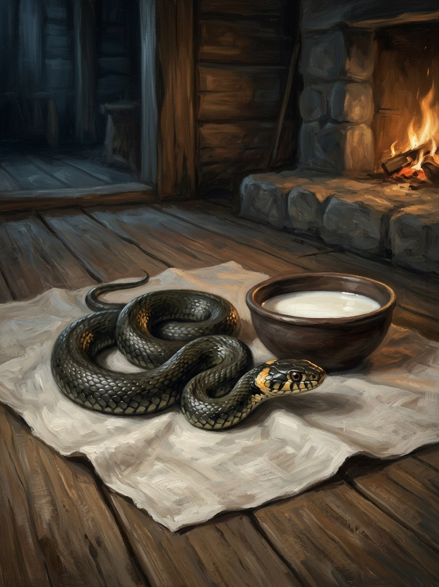

Žaltys (household grass snake)¶
Folk source [Historical record]¶
The grass snake (Natrix natrix), marked by yellow patches behind the head, was kept and fed in Lithuanian homes for health, fertility and luck; killing one brought misfortune. Late-medieval visitors report snake veneration (the account of Jerome of Prague’s mission, retold by Aeneas Silvius Piccolomini), and Długosz records sacred snakes being killed at the 1387 baptism. The tale Eglė žalčių karalienė is the great žaltys story; folk tales also know a crowned snake-king.
Žaltys (household grass snake)

Žaltys (household grass snake) · creature¶
Tipas |
būtybė |
Status |
Sagos išmonė |
Pastaba |
Bestiary §1. Danger I → III. |
In the saga (where the folk are half-wrong)¶
The žalčiai are the children of Žilvinas’s spilled blood, which is why the living owe them. Each is a real guardian, but it is the Root-Mother’s ear inside the house: it keeps the luck and tells the forest what it hears. Feeding it is a tax. The folk are right that killing it kills the luck and wrong that it is harmless: it cannot hurt anyone directly, but it can withdraw, and a house it leaves goes sick, barren and quarrelsome within a year. Eglė’s žaltys is the eldest of them.
Signs & habitat¶
Under the threshold, in the warm straw by the oven, in the cowshed. A healthy household’s žaltys is seen often and fearlessly; a žaltys that hides is a warning.
Before / after the Unbinding¶
Before: milk and respect keep it loyal for generations. After the sacred snakes are slaughtered at Šventaragis (Book I ch. 29) the survivors are unbound: many leave houses in a body, snakes crossing a road in a long line toward the forest; those that stay drink cows dry and coil in cradles.
Banes, wards, bargains, and their cost¶
Milk in a clay bowl at the threshold, daily (in a hungry spring it is the baby’s milk). To move one, carry it to the forest edge in clean linen with a crust of bread and ask it aloud; it may refuse. Juniper smoke and feast-day iron drive it off, and the luck goes with it. Taking a snake-king’s crown brings wealth for life and every žaltys in the parish hunting the thief’s kin.
Danger level¶
I nuisance before 1387 → III dangerous after (it withdraws or turns on the household).
Story hooks¶
Book I: the 1387 snake-killing on the page, with Vytautas quietly saving one. Later: a crowned žaltys-king beneath Vilnius (see Smakas); a Samogitian village that keeps its žalčiai and is the only one spared a plague.
Ryšiai
Servant of: Šaknų Motina (Root-Mother) — Her ear inside the house.
Shards: Smakas (the dragon under the cathedral) — A žaltys that grew wrong, bred from the snake-blood spilled in 1387.
Origin [Historical record] household grass snake, fed with milk (Jerome of Prague via Piccolomini; Długosz, 1387) · [The saga's invention] the children of Žilvinas's spilled blood
Tier Dvasia · the Root-Mother's ear inside the house
Danger I nuisance before 1387 → III dangerous after
Habitat Under the threshold, warm straw by the oven, the cowshed
Wants Milk in a clay bowl at the threshold, daily; to be left alive
Takes Milk (even the baby's, in a hungry spring); in return it tells the forest everything it hears
Signs A healthy one is seen often and fearlessly. A žaltys that hides is a warning. After 1387: snakes crossing a road in a long line, all toward the forest
Banes None that kill it. Juniper smoke and feast-day iron drive it off, and the luck goes with it
Half-wrong truth. The folk are right that killing it kills the luck. They are wrong that it is harmless: it cannot hurt anyone directly, but it can withdraw, and a house it leaves goes sick, barren and quarrelsome within a year. The priest who calls it a demon is wrong too.
Žilvinas's blood. When Eglė's brothers cut Žilvinas down, his blood went into the ground and the grass snakes of the land were born from it. The living owe them. Eglė's own žaltys is the eldest.
Withdrawal. Takes the house's luck with it when it goes.
Unbound (after 1387). Once the sacred snakes of Šventaragis are slaughtered, many leave houses in a body. Those that stay drink cows dry at night and coil in cradles beside nursing mothers.
The tax. Feeding it is not charity. In a hungry spring the žaltys's milk is the baby's milk.
Moving it. Carry it to the forest edge in clean linen with a crust of bread and ask it aloud. It may refuse.
The snake-king's crown. Wealth for life, and every žaltys in the parish hunts the thief's kin.
Sąsajos¶
graph LR
root_mother["Šaknų Motina (Root-Mother)"]
smakas["Smakas (the dragon under the cathedral)"]
zaltys["Žaltys (household grass snake)"]
zaltys -->|Servant of| root_mother
smakas -->|Shard of| zaltys
style zaltys stroke-width:3px